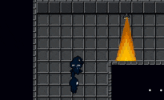
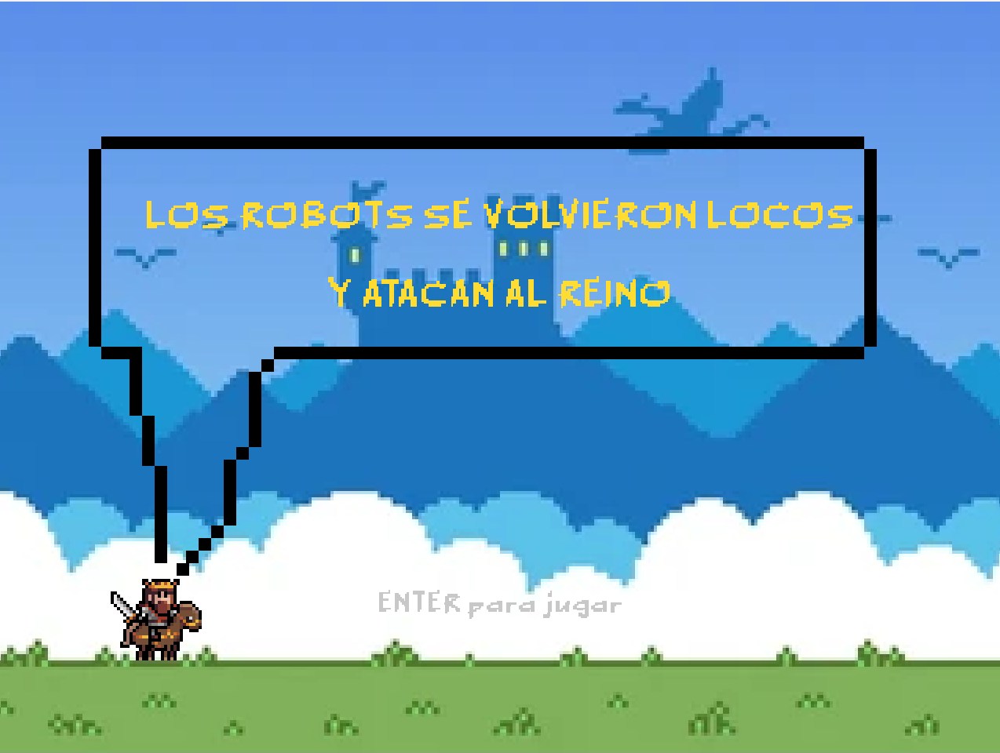

01
Juegos

PuzzleShadows: Shunned by Light
Puzzle top-down donde la luz te mata o te salva y la muerte es una herramienta.
C#Pixel Art
 Plataformas
PlataformasTemplo Utaki
Platformer 2D de aventura con gancho de agarre, trampas y guardianes antiguos.
Pixel ArtPlataformas

Tower DefenseLos Robots se Volvieron Locos y Atacan el Reino
Tower defense de estrategia: aguantá oleadas de robots colocando torres y administrando recursos.
UnityEstrategia